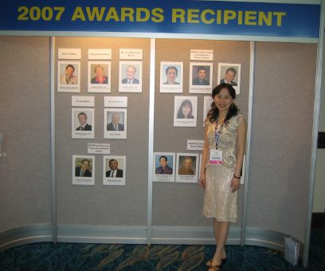
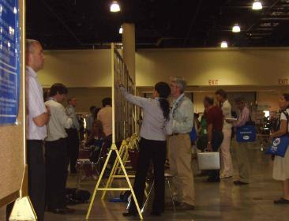
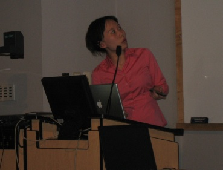
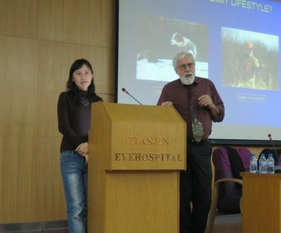

Home |
About OMLAB |
Personnel |
Software, Models, & Data |
Reports & Teaching |
The "Editorial Page" |
Contact Us
Zhong I. Wang, PhD
Biomedical Engineering Department
Case Western Reserve University
Office: VA Medical Center BC-300P
Phone: 216-791-3800 ext.5222
Selected Links: Curriculum Vitae and Bibliography
Curriculum Vitae (PDF) (HTML)
* This omlab page was last updated 12/19/2007 *
============================================================================================================
Research Summary
Infantile Nystagmus Syndrome (INS) is one or more distinct ocular motor instabilities that are characterized by the involuntary oscillations of the eyes. The purpose of my research is to better understand the underlying mechanisms of INS in terms of its static characteristics, dynamic properties, and changes after extraocular muscle surgeries, and to incorporate these findings into a behavioral Ocular Motor System model. This research is a typical application of Biomedical Engineering, i.e., utilizing eye-movement data analysis to assist clinical treatment planning and control-systems modeling to explore the organizing principles of the ocular motor system.
============================================================================================================
Journal Articles
1. Wang, Z., Dell'Osso, L.F., Zhang, Z, Leigh, R.J., and Jacobs, J.B.: Tenotomy Does Not Affect Saccadic Velocities: Support for the "Small-Signal" Gain Hypothesis. Vision Res. 46:2259-2267, 2006.
2. Wang, Z., Dell'Osso, L.F., Jacobs, J.B., Burnstine, R.A., and Tomsak, R.L.: Effects of tenotomy on patients with infantile nystagmus syndrome: foveation improvement over a broadened visual field. JAAPOS 10:552-560, 2006.
3. Wang, Z.I., Dell'Osso, L.F., Tomsak, R.L., and Jacobs, J.B.: Combining Recessions (Nystagmus and Strabismus) with Tenotomy Improved Visual Function and Decreased Oscillopsia and Diplopia in Acquired Downbeat Nystagmus and in Horizontal Infantile Nystagmus Syndrome. JAAPOS 11:135-141, 2007.
4. Wang, Z.I., Dell'Osso, L.F.: Being "Slow to See" is a Dynamic Visual Function Consequence of Infantile Nystagmus Syndrome: Model Predictions and Patient Data Identify Stimulus Timing as its Cause. Vision Res. 47:1550-1560, 2007.
5. Wang, Z.I., Dell'Osso, L.F.: Review of the Tenotomy Nystagmus Surgery: Origin, Mechanism, and General Efficacy. Neuro-Ophthalmol. 31:1-9, 2007.
Book Chapters
1. Dell'Osso, L.F., Tomsak, R.L., Wang, Z., Leigh, R.J., Rucker, J.C., Jacobs, J.B.: Combining Peripheral-Surgical (Tenotomy) with either Central-Pharmacological (Memantine) or other Peripheral-Surgical (Anderson) Therapies to Damp Acquired Pendular or Downbeat Nystagmus and Oscillopsia. In "Proc. of the 10th World Multi-Conference on Systemics, Cybernetics and Informatics (WMSCI 2006), Vol. II," edited by N. Callaos, W. Lesso, C. Ham, L.F. Dell'Osso, and Z. Li, International Institute of Informatics and Systemics, Orlando, FL, pp. 34-38, 2006. [also available on CD]
2. Dell'Osso, L.F., Wang, Z., Leigh, R.J., Jacobs, J.B.: Hypothetical Explanation for the Role of Proprioception in the Damping of Infantile Nystagmus by Tenotomy Surgery: The Small-Signal Gain Hypothesis. In "Proc. of the 10th World Multi-Conference on Systemics, Cybernetics and Informatics (WMSCI 2006), Vol. II," edited by N. Callaos, W. Lesso, C. Ham, L.F. Dell'Osso, and Z. Li, International Institute of Informatics and Systemics, Orlando, FL, pp. 39-44, 2006. [also available on CD]
3. Wang, Z., Dell'Osso, L.F., Jacobs, J.B.: A Unifying Hypothesis for both Pendular and Jerk Waveforms in Infantile Nystagmus Embodied in a Behavioral Ocular Motor System Model. In "Proc. of the 10th World Multi-Conference on Systemics, Cybernetics and Informatics (WMSCI 2006), Vol. II," edited by N. Callaos, W. Lesso, C. Ham, L.F. Dell'Osso, and Z. Li, International Institute of Informatics and Systemics, Orlando, FL, pp. 51-56, 2006. [also available on CD]
4. Wang, Z.I., Dell'Osso, L.F., and Jacobs, J.B.: Expanding the Original Behavioral Infantile Nystagmus Syndrome Model to Jerk Waveforms and Gaze-angle Variations. In "Advances in Understanding Mechanisms and Treatment of Infantile Forms of Nystagmus," edited by R.J. Leigh. (In Press)
5. Serra, A., Dell'Osso, L.F., and Wang, Z.I.: Vergence Hysteresis in Infantile Nystagmus. In "Advances in Understanding Mechanisms and Treatment of Infantile Forms of Nystagmus," edited by R.J. Leigh. (In Press)
6. Dell'Osso, L.F., Wang, Z.I.: Extraocular Proprioception and New Treatments for Infantile Nystagmus Syndrome. In "Using Eye Movements as an Experimental Probe of Brain Function. A Symposium in Honour of Jean Buettner-Ennever," edited by C. Kennard and R.J. Leigh, Publisher, City, pp. 000-000, 2007 (In Press).
7. Liao, K., Walker, M.F., Joshi, A., Reschke, M., Wang, Z., Leigh, R.J.: A Reinterpretation of the Purpose of the Translational Vestibulo-ocular Reflexes in Normal Human Subjects. In "Using Eye Movements as an Experimental Probe of Brain Function. A Symposium in Honour of Jean Buettner-Ennever," edited by C. Kennard and R.J. Leigh, Publisher, City, pp. 000-000, 2007 (In Press).
============================================================================================================
ARVO 2007

ARVO Poster Presentation, 05/2007

DD_OMLAB Meeting Talk, 05/2007

Tianjing Eye Hospital Lecture, 11/2006

Also Check My Personal Blog :)
Home |
About OMLAB |
Personnel |
Software, Models, & Data |
Reports & Teaching |
The "Editorial Page" |
Contact Us